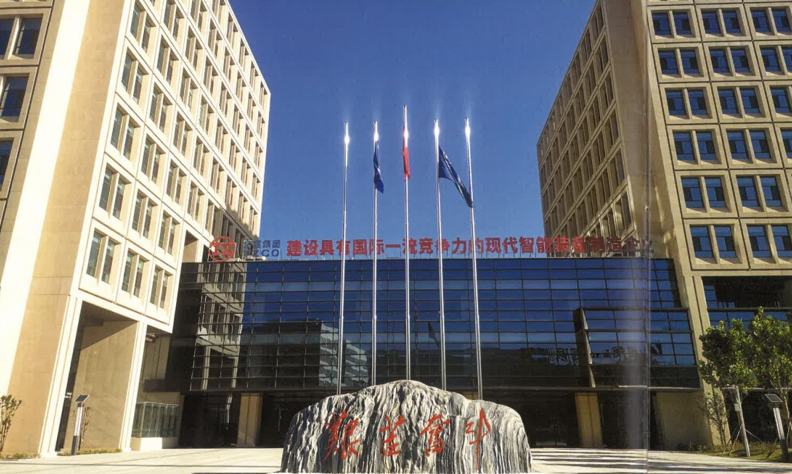
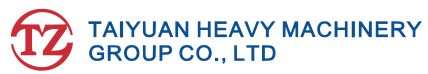
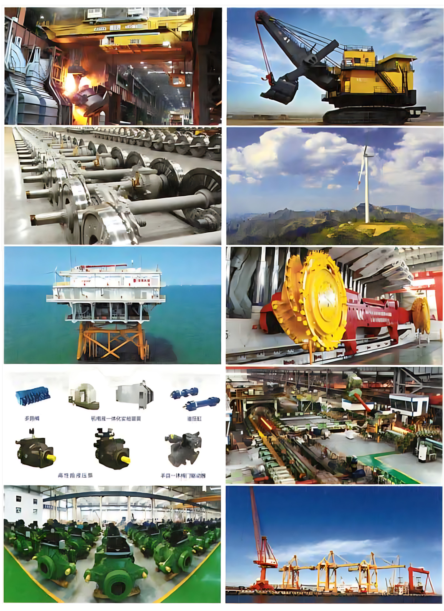

About Us


3000+ parts
40000+ projects
500+ equipment
Taiyuan Heavy Machinery Group Co., Ltd. (hereinafter referred to as "TZ") was founded in 1950. It was the first heavy machinery manufacturing enterprise independently designed and built with an investment from the CPC Central Committee amounting to 750 million *jin* of millet (equivalent to 60.75 million RMB). Known as the "Eldest Son of the Republic," TZ has supplied over 3,000 types and more than 40,000 sets of equipment—totaling approximately 10 million tons—to key national projects. It has achieved over 500 "firsts" in China and the world, making significant contributions to the construction, reform, and development of New China, and has earned the reputation of being a "pioneer of the national economy."
TZ is the world's only R&D and manufacturing base covering the full spectrum, series, and process chain for rail transit wheels, axles, gearboxes, and wheelsets. It is the only global base capable of simultaneously developing and manufacturing mining excavators ranging from 4 to 75 cubic meters and a full series of multi-power hydraulic excavators ranging from 1.8 to 150 tons. It is the only global production base for a full range of cranes—exemplified by the world's largest 1,300-ton hydroelectric power station bridge crane and 550-ton casting crane. Additionally, it is the largest domestic production base for pipe rolling mills and straightening machines; the base with the most comprehensive range of forging and pressing equipment and coke oven equipment; and the largest production base for aerospace launch systems and oil-film bearings for rolling mills. It is the only enterprise in Shanxi Province serving as the "chain leader" for both the high-end equipment manufacturing and wind power equipment industrial chains.
The company currently employs over 8,600 staff members and oversees 53 subsidiaries (at the second tier and below). Its key member units include Taiyuan Heavy Industry Co., Ltd., TZ Group Coal Machinery Co., Ltd., TZ Group Yuci Hydraulic Industry Co., Ltd., and TZ (Tianjin) Binhai Heavy Machinery Co., Ltd. The company actively explores and implements strategies to solidly advance new industrialization and develop new quality productive forces. Guided by the principles of "strengthening traditional products, optimizing strategic emerging products, and refining mass-produced products," it has established a "3+5+3" product layout, continuously optimizing its industrial structure. Its core offerings comprise ten major product series—including cranes, excavators, rail transit equipment, wind power equipment, marine engineering equipment, coal mining machinery, hydraulic products, metallurgical equipment, gear transmission systems, and port machinery. Possessing capabilities for complete equipment sets and engineering, procurement, and construction (EPC) contracting, the company exports to over 60 countries and regions worldwide. Its products are widely applied across industries such as metallurgy, mining, energy, transportation, marine engineering, aerospace, chemicals, railways, shipbuilding, environmental protection, and coal.

Looking ahead, Taiyuan Heavy Industry (TZ) will focus on the national strategy of advancing new industrialization. Upholding core values—"customer first, efficiency-oriented, people-centric, reform and innovation, and benchmarking against the best"—and pursuing a path of "refinement, internationalization, high-end development, and smart manufacturing," the company aims to drive high-quality, rapid growth across the board. It strives to build a modern, intelligent equipment manufacturing enterprise with world-class competitiveness.